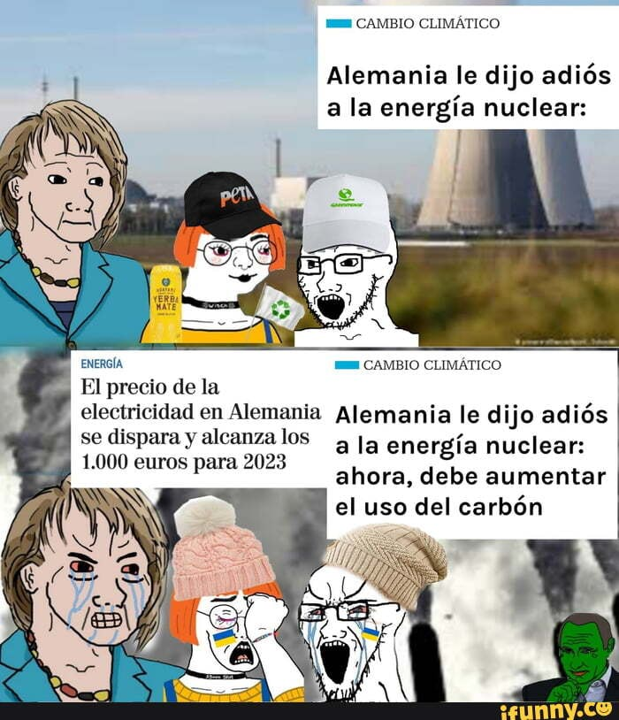
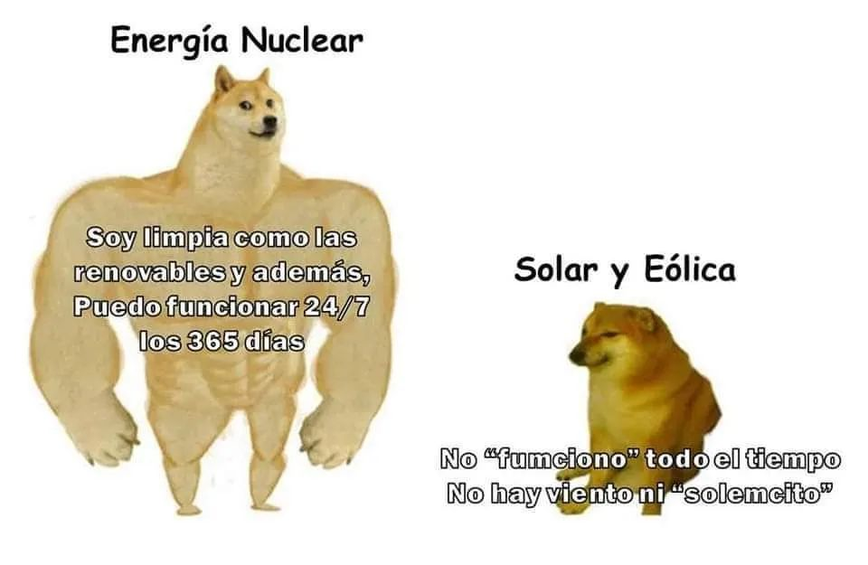

❌ El Gran Fraude Renovable:
La energía eólica y solar son como un adolescente irresponsable: solo trabajan cuando les da la gana. En 2023, Alemania sufrió un "apagón renovable" durante 2 semanas invernales porque no había sol ni viento. Tuvieron que quemar carbón ruso.
✅ La Realidad Nuclear:
Los reactores nucleares funcionan al 92% de capacidad anual, incluso en huracanes o noches polares. Francia lleva 40 años con un suministro estable, mientras España sufre cortes cada vez que hay calma eólica.
